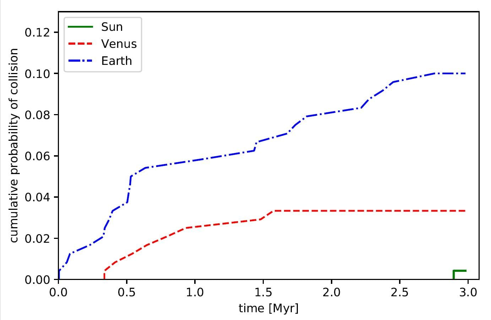

Duymuşsunuzdur görmüşsünüzdür, yaklaşık 2 hafta önce çılgın girişimcimiz Elon Musk arabasını uzaya göndermişti Elbette amaç uzaya araba atmak değil roketin marsa kadar yük taşıma kapasitesini denemekti (ve daha bir çok başka sebep).
Fizikçiler de demiş ki ulan bu arabayı uzaya gönderiyonuz ama yarın bi gün dönüp dolaşıp kafamıza düşmesin? Oturmuşlar hesaplamışlar, bir de üstüne makale yazmışlar ( https://arxiv.org/abs/1802.04718), sonucun özeti ekteki resim.
Arabanın uzayda nasıl salınacağı bir çok değişkene bağlı; özellikle de fırlatma koşullarındaki en ufak farklılıklar bile değişik yörüngelere sebep olabiliyor, buna kaos deniliyor. Bu sebeple de yörüngenin 1 milyon yıl sonra nasıl olacağını tek bir sonuç olarak vermek mümkün değil, bunun yerine farklı durumları değerlendirip bunlar arasından olasılık hesabı yapılıyor. Aşağıdaki resimde de bu olasılıkların grafiği var: Yatay eksen milyon yıl cinsinden geçen süre, mavi çizgi arabanın dünyada kalan torunlarımızın kafasında düşme olasılığının zamanla değişimi, kırmızı çizgiyse venüse giden torunların kafasına düşme olasılığının zamanla değişimi. En sağ altta azıcık bi yeşil var, o da arabanın güneşe düşme olasılığı.
Yani özet olarak önümüzdeki yarım milyon yıl boyunca arabanın kafamıza düşmesi 20de 1den az. 3 milyon yıl sonra 10’da 1 oluyor o ayrı mevzu :)
